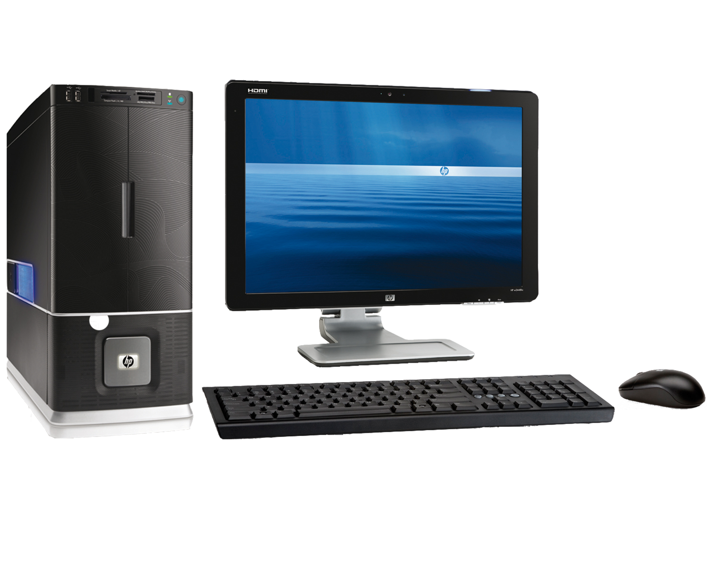
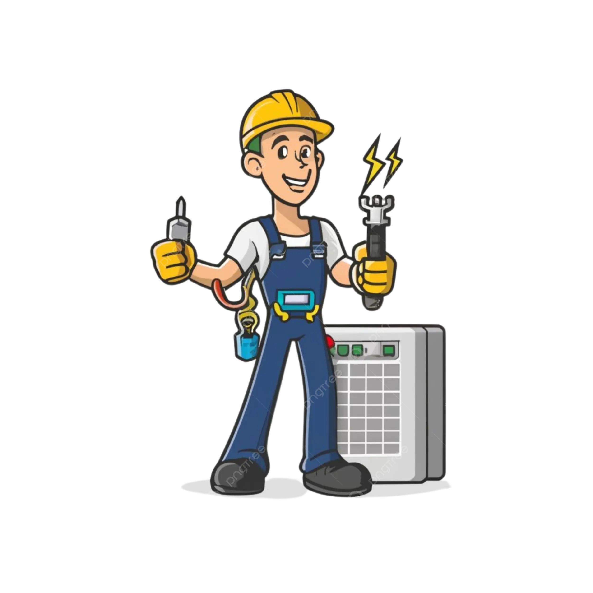
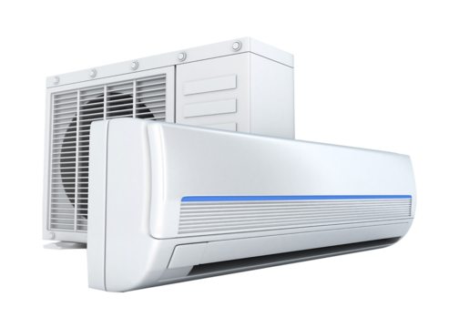

COPA

The ITI COPA (Computer Operator and Programming Assistant) trade is a one-year vocational course under the Craftsmen Training Scheme (CTS), designed to impart foundational skills in computer operations, programming, and IT tools. It equips students with practical knowledge in areas such as operating systems, office applications, internet usage, and basic programming languages, preparing them for entry-level roles in the IT sector.
Electrician

The ITI Electrician trade is a two-year vocational course that trains students in electrical systems, wiring, maintenance, and repair of electrical equipment. It prepares candidates for roles in industries, construction, and electrical maintenance sectors with hands-on training.
Electronics Mechanic

The ITI Electronics Mechanic trade is a two-year course that trains students in installing, maintaining, and repairing electronic equipment like TVs, computers, communication devices, and industrial electronics. It combines theoretical knowledge with practical skills in circuit design, testing instruments, and troubleshooting.
Fitter
The ITI Fitter trade is a two-year course that focuses on assembling, installing, and maintaining mechanical systems and machinery. It trains students in tasks like fitting, filing, drilling, welding, and maintenance work used in manufacturing and heavy industries.
Diesel Mechanic

The ITI Diesel Mechanic trade is a one-year course that trains students to diagnose, repair, and maintain diesel engines used in vehicles, generators, and heavy machinery. It includes hands-on training in engine overhauling, fuel system servicing, and mechanical troubleshooting.
R & AC

The ITI RAC (Refrigeration and Air Conditioning) trade is a two-year course that trains students in installation, maintenance, and repair of refrigerators, air conditioners, water coolers, and other cooling systems. It covers practical knowledge of cooling principles, electrical components, gas charging, and system diagnostics.